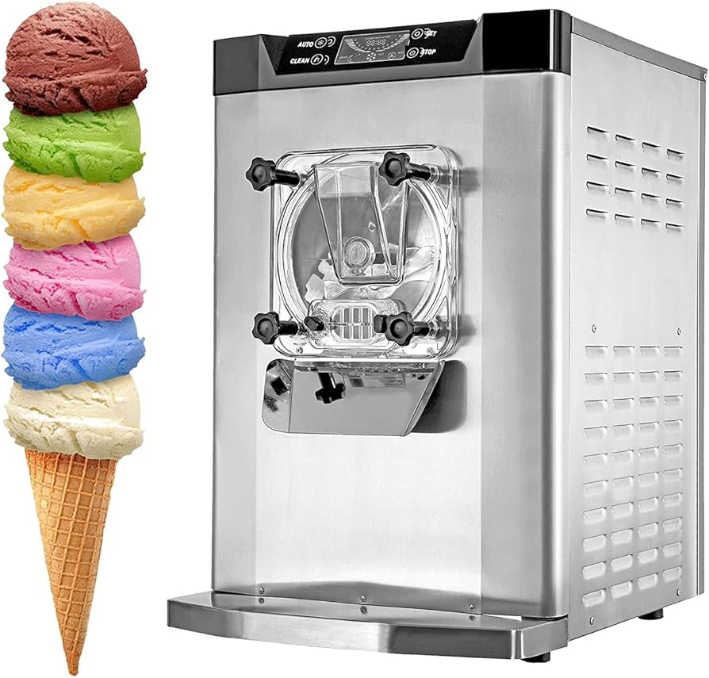

We get you cover with the bests machines you need for ice cream either for business or hobby:
- Ice cream maker machines
- Supplies
- Repair Service
- Rental
- Technical advice
Ice Cream Maker Machines
For business, we have 3 different models of ice cream makers, depending on your needs: